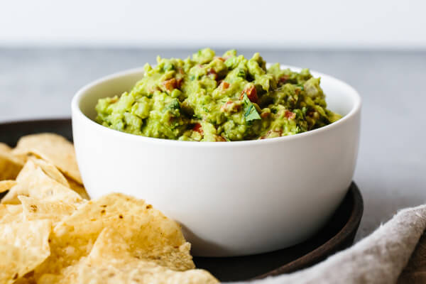

A tried and true guacamole recipe that's easy to make, uses fresh ingredients and is loaded with flavor. It's the best guacamole dip hands down!
3 avocados, ripe
1/2 small onion, finely diced
2 Roma tomatoes, diced
3 tablespoons finely chopped fresh cilantro
1 jalapeno pepper, seeds removed and finely diced
2 garlic cloves, minced
1 lime, juiced
1/2 teaspoon sea salt
1) Slice the avocados in half, remove the pit, and scoop into a mixing bowl.
2) Mash the avocado with a fork and make it as chunky or smooth as you'd like.
3) Add the remaining ingredients and stir together. Give it a taste test and add a pinch more salt or lime juice if needed.
4) Serve the guacamole with tortilla chips.